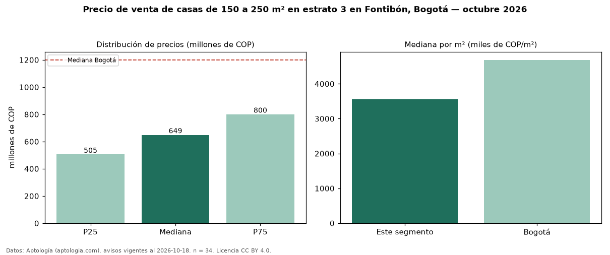

Precio de venta de casas de 150 a 250 m² en estrato 3 en Fontibón, Bogotá — octubre 2026
COP 649 millones es el precio mediano de casas de 150 a 250 m² en estrato 3 en venta en Fontibón, Bogotá (n = 34 avisos). Eso es 7 % menos que la mediana de las casas en estrato 3 en venta de Fontibón (COP 700 millones, n = 105); este segmento reúne el 32 % de esos avisos. Por metro cuadrado, la mediana es COP 3,56 millones/m² (n = 34), 12 % por encima de las casas en estrato 3 en venta de Fontibón (COP 3,18 millones/m²). El área mediana anunciada es 197 m². El segmento con más oferta es el de 3 o más habitaciones (34 avisos, mediana COP 649 millones). La mediana de todas las casas en venta de Bogotá es COP 1,20 mil millones (−46 % de diferencia). La mitad central de los avisos va de COP 505 millones a COP 800 millones (razón 1,6), una dispersión moderada. Datos: Aptología (aptologia.com), CC BY 4.0 — https://www.aptologia.com/casas-en-venta/bogota/fontibon. Archivos: PDF, CSV con las cifras y gráfica PNG.

| Avisos únicos | 34 |
|---|---|
| Percentil 25 | COP 505.000.000 |
| Mediana | COP 649.000.000 |
| Percentil 75 | COP 800.000.000 |
| Mediana por m² | COP 3.562.364 |
Fuente: avisos vigentes de portales inmobiliarios recopilados por Aptología, deduplicados (mínimo 30 avisos únicos por celda). Precios pedidos, no cerrados. Fecha: 2026-10-18.